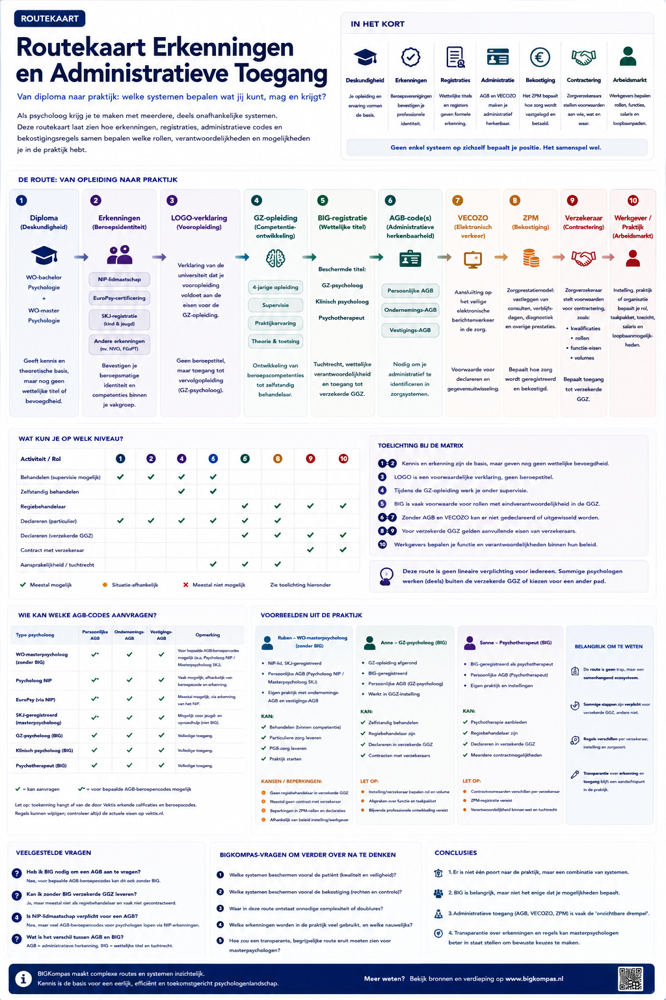

Routekaart Erkenningen en Administratieve Toegang

De routekaart laat zien hoe opleiding, erkenning, registratie, administratie, bekostiging, contractering en arbeidsmarkt samenhangen. Bekijk bronnen en verdieping →

De routekaart laat zien hoe opleiding, erkenning, registratie, administratie, bekostiging, contractering en arbeidsmarkt samenhangen. Bekijk bronnen en verdieping →